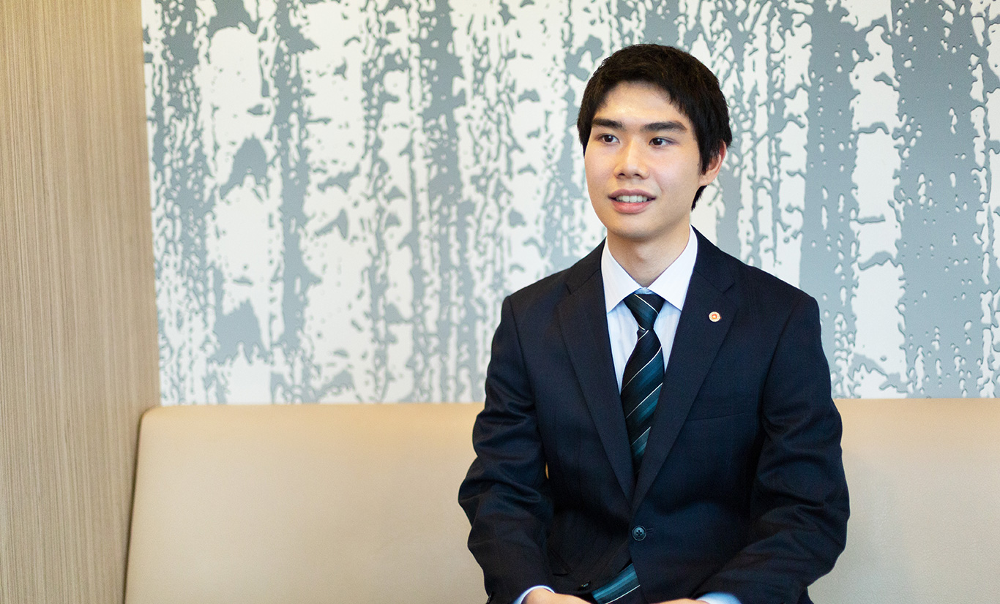

2022年 新卒入社 / 開発部
社会貢献性の高い企業で働きたい
就職活動は地方創生や社会貢献性の視点で行っていました。学生時代に株式市場を分析するコンテストに参加し、その時に“社会貢献性の高い企業”という特集でカナミックネットワークが紹介されていたことで当社を知りました。また、大学の授業でプログラミングをする機会があり、IT業界に興味があったこともきっかけとなり、自分のやりたいことと合っている会社だと思い入社を決めました。

先輩社員や上司の存在が心強い
入社してからはマンツーマンで先輩社員に仕事を丁寧に教えて頂きました。実際にある案件を制作する機会もあり、先輩社員に細かく教わりながら進めていきました。自分自身が気付かないところやもっとこうしたら良くなるなどのアドバイスをたくさんいただき、お客様からの修正もありましたがやり取りを重ね、実際に完成したときはやりがいを感じました。新卒で何も知らない状態でしたが、些細なことでも親身になって先輩社員や上司は答えてくださるので、質問しづらいといったこともなく非常に安心感のある環境だと感じています。
コミュニケーション力を高めたい
仕事を始めてから感じたことは部署間のやりとりの多さでした。サポートがお客様から質問を受け、営業に確認したり、システム関連であれば開発に依頼したりする、全員が同じフロアにいることもあり、他部署の人とも顔を合わせる機会が多い環境です。開発の仕事に対して、一人で黙々と作業をするイメージが強かったですが、会話をする機会も多いので、自分の言いたいことを「伝える力」、相手の言葉を「聴く力」、そういったコミュニケーション力を高めていきたいです。